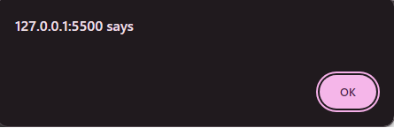
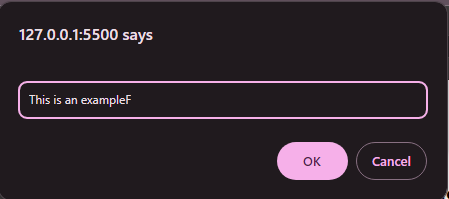
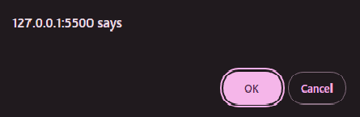

arithmetic operators
-
mathametical familiar operaters konse hen? or kya krte hen.
ye simple mathametical familiar operaters hen jinse ap numbers ko plus, minus, multiply, devide or etc operations kr skte hen. for example
let num = 10;
console.log( num + 10);
the result will be " 20 ";
isi tarah ham dusra operation bhi kr skte hen. for example
let num = 10;
console.log( num * 10);
the result will be " 100 ";
isi tarah ham dusra operation bhi kr k dekhte hen. for example
let num = 10;
console.log( num % 2);
the result will be " 0 ";
ye sign remider ko maloom krne k lye use hota hai yani ye ye check krne ka k 10 ko agar 2 2 kr k divide kya jae to kya akhir men kuch bachega agar bachna hoga to wo btaega. -
mathametical unfamiliar operaters konse hen? or kya krte hen.
ye mathametical unfamiliar operaters hen jinse ap numbers men operations kr skte hen.
★ increament (++) : agar ap ne number men sirf aik number ko plus krna ho to uske lye normal jo plus ka krne ka tareeqa hai jese num = num + 1; ham ise use nhi krte balke hamare pas increament ka opetion hota hai jis men ham bas variable k age ++ ka sign lagate hen or 1 number add ho jata hai.
for example
let num = 10;
num++;
console.log(num);
the result will be " 11 "
★ decreament (- -) :isi tarah decrement ka bhi opetion hota hai yani ap agar aik number minus krna chahte hen to normal process k bajae ap (- -) ka use kr skte hen jise decrement kha jata hai. for example
let num = 10;
num--;
console.log(num);
the result will be " 9 "
-
kya post-increment/decrement or pre-increment/decrement kya hota hai?
★ post increment/decrement : is se murad hai ye k JavaScript jese k intepreted language hai or top to bottom and left to right kaam krti hai to jab ye print kregi to pehle variable ko print kregi or uske baad increament hoga jis se increament krda value print nhi hogi. for example
let num = 10;
console.log(num++)
to iska result aaega 10
q k variable pehle print ho gaya increament phr baad men huwa ab agar iske baad phr se ap print krenge to us result men increament show hoga. for example. console.log(num)
11
isi tarah increament bhi kaam kregi. for example
let num = 10;
console.log(num--)
to iska result aaega 10
or iske baad agar phr print krenge to increment show hoga.
console.log(num)
9
★ pre increment/decrement : ismen increment/decrement pehle hi ho jaegi or jab print krenge to increment/decrement hoga. for example
let num = 10;
console.log(++num)
to iska result aaega 11
q k is baar increament pehle hi ho gaya or print baad men huwa isi tarah decreament bhi kaam krta hai. -
agar kabhi esa ho k boht sare mathametical operations aik saath ho rhe hun yani k (plus, minus, multiply, divide, etc) to in men se pehle konsa wala operation perform hoga or inke perfoem hone ka sequence kya hoga?
agar kabhhi boht sare mathametical operations aik saath ho to us waqt normaly math men jo BODMAS ka rule hota hai wo follow kya jata hai?
-
BODMAS ka kay mtlab hai?
BODMAS aik rule hia math ka jis k according mathametical operations perform kye jate hen. iski full form hai.
B : Bracket "( )"
O : Order (Powers and Roots)
D : division ( / )
M : multiplication ( * )
A : Addition ( + )
S : subtraction ( - )
iska mtlab hai k jab ye operations aik saath ajaen to in men se pehle wo wala operation hoga jo Brackets men likha gaya hoga chahen wo jo bhi ho uske baad order ko solve kya jaega or isi tarah baqi operations perform kye jaenge.for example
2 + 4 * 3
iska jo answer hai wo hai 14 q k pehle multiplication huwi or uske bad Addition
but agar men ye krdun
(2 + 4) * 3
to ab iska answer hoga 18 q k ab pehle Addition huwi or phr uske baad multiplication
or isi tarah nested Brackets bhi ap laga skte hen yani agar Brackets k andar bhi koi bari calculation ho rhi ho to un men se wo pehle hogi jo nested brackets men hogi. -
JavaScript k intepreted tareeqe ki koi practical example? or saath hi muultiple mathametical operations ki bhi practice.
var a = 4;
var b = 3;
★ : a++ - b-- + --a + a++;
ab yhan per sab se pehle is baat ko revise kr len k JavaScript kese kaam krti hai yani left to right and top to bottom to ab ap operations ko samjh skenge.- sab se pehle a ki value print huwi jo k hai 4;
- uske baad a k value men increament huwa to ab value ban gai 5;
- iske baad b ki value ko print kya jo k hai 3;
- ab b ki value men decreament huwa jis se iske value ban gai 2
-
iske baad in dono men
mathametical operation yani k subtraction huwi yani
k a ki value men se
b ki value ko minus kya to result
aya 1;
q k a ki value increament se pehle hi print huwi to uski value 4 hi rhi uske baad increment huwa ab next time jab print hoga tab a ki value 5 hogi isi tarh b ki value bhi pehle print ho gai uske baad is men decreament huwa to ab jab next time b print hoga uski value 2 hogi to calculation k waqt a ki value 4 or b ki value 3 thi isi waja se inka result aya 1 - iske baad a ki value men decreament huwa jis se a ki value phr se 4 ho gai.
- ab jo pehle result aya tha 1 ka wo a ki present value yani k 4 men add huwa jis se result aya 5
- iske baad phr se a ki value jo k ab 4 hai print huwi yani usi k saath mathametical operation huwa jo k yhan per addition hai to ab result 9; aya jo k last result hai.
- ab iske baad phr se a ki value men increament huwa jis se iski value huwi 5 but wo show nhi hoga q k ab wo print hone k baad execute huwa hai.
★ mathametical familiar operatores
★ mathametical unfamiliar operatores
★ eliminating ambiguity
camparison operaters
-
camparison operaters ktne hen or konse hen?
camparison operaters 8 hen or wo ye hen.
- Equal to (==)
- Not equal to (!=)
- Strict equal to (===)
- Strict not equal to (!==)
- Greater than (>)
- Less than (<)
- Greater than or equal to (>=)
- Less than or equal to (<=)
-
camparison operaters kya return men koi value dete hen agar han to kya dete hen?
g han camparison operaters return men boolean value dete hen yani ya to true ya phr false
-
In men se har operator ka kya kaam hai?
har operator ka kaam alag alag bayan kya gaya hai.
-
Equal to (==)
Yeh operator do values ko compare karta hai aur agar dono values equal hain to true return karta hai. -
Not equal to (!=)
Yeh operator do values ko compare karta hai aur agar dono values equal nahi hain to true return karta hai. -
Strict equal to (===)
Yeh operator do values ko compare karta hai, lekin data types ke sath sath values ka bhi comparison karta hai. Agar dono values aur unka data type dono hi equal hain to true return karta hai. -
Strict not equal to (!==)
Yeh operator do values ko compare karta hai aur agar dono values ya to equal nahi hain ya phir unka data type bhi equal nahi hai to true return karta hai. -
Greater than (>)
Yeh operator ek value ko doosri value ke sath compare karta hai aur agar pehli value doosri se badi hoti hai to true return karta hai. -
Less than (<)
Yeh operator ek value ko doosri value ke sath compare karta hai aur agar pehli value doosri se choti hoti hai to true return karta hai. -
Greater than or equal to (>=)
Yeh operator ek value ko doosri value ke sath compare karta hai aur agar pehli value doosri value se badi ya equal hoti hai to true return karta hai. -
Less than or equal to (<=)
Yeh operator ek value ko doosri value ke sath compare karta hai aur agar pehli value doosri value se choti ya equal hoti hai to true return karta hai.
-
Equal to (==)
logical operaters
-
logical operaters ktne hen or konse hen?
logical operaters 3 hen or wo ye hen.
- Logical AND (&&)
- Logical OR (||)
- Logical NOT (!)
-
inko use q krte hen mukhtasarn bayan kren?
logical operator hum multiple conditions aik hi expression men lagane k lye use krte hen. for example
agar ap ki condition hai k agar koi student karachi se hai or 18 above hai to usko ap apne institute men addmission denge to ab yhan ap 2 conditions true krwana chahte hen jinko lagane k lye logical operaters ka use hoga. -
"logical AND (&&)" ka use kya hai?
"logical AND (&&)" hum us waqt use krte hen jab hamne multiple conditions aik hi baar check krni ho or hamari need ye ho k jtni conditions hamne lagai hen wo sari ki sari true hun un men se agar koi aik bhi false ho to code execution na ho. for example
if(age >= 18 && age <= 40){
console.log("you are eligible for addmission")
}
ab yhan ye dono conditions check hungi or agar dono true huwi to code execute ho jaega or agar in dono men se koi aik bhi false huwi to code execution nhi hogi. -
"logical OR ( || )" ka use kya hai?
"logical OR ( || )" hum us waqt use krte hen jab hamne multiple conditions aik hi baar check krni ho or hamari need ye ho k in conditions men se aik bhi true ho to code execute ho jae. for example
if(location == "karachi" || location == "lahore"){
console.log("you are eligible for addmission")
}
ab yhan ye dono conditions check hungi or agar dono men se koi aik false bhi huwi to bhi code execute ho jaega. yani k ap k agar karachi ki location huwi or lahore hi bhi huwi to bhi addmission ho jaega or agar in dono men se kisi aik jaga per location huiw to bhi addmission ho jaega. -
kya ham sare "logical operaters ka use aik hi saath kr skte hen?
g han ham multiple "logical operaters ka use apni need k hisab se aik saath kr skte hen. for example.
if (age >= 18 && (location == "karachi" || location == "lahore")){
console.log("you are eligible for addmission")
}
ab is example men hamne 2 logical operaters use kye hen or syntax samjhne men asani krne k lye baad men jo condition aik dusre se relate krti hai use brackets men band kya hai take samjh men aae k khan per kis condition ki baat ho rhi hai.
or is example men btaya ye ja rha hai k agar student ki age 18 hai to uske baad agli 2 conditions men se koi aik bhi true hogi to usko addmission mil jaega yani ya to student karachi se ho ya phr lahore iske ilawa khin or se hoga to usko addmission nhi milega
Predefined methods
-
Predefined methods se kya murdad hai?
har programming language men Predefined methods/functions hote hen. jo k programming language hamen provide krti hai jin methods/functions ko us language k developer ne banaya hota hai coders ki asani k lye.JavaScript k Predefined methods/functions men se kuch ye hen.
★ alert
★ prompt
★ confirm
★ setTimeout
★ setInterval
★ clearTimeout
★ clearInterval
-
alert q use hota hai?
alert user ko esa message show krwane k lye use hota hai or Aise chhote popup messages ko "alert" kehte hain. Ye ek tarah ka notification hai jo user ko kisi message ya information ke baare mein batata hai.
for example
 -
prompt q use hota hai?
prompt ek JavaScript function hai jo user se input lene ke liye use hota hai. Ye ek dialog box ko display karta hai jisme user se kuch input maanga ja sakta hai, aur phir us input ko JavaScript ke variable mein store kiya ja sakta hai. Ye generally user se information collect karne ke liye ya user se kuch input lenay ke liye istemal hota hai.
for example

or is men 2 values bhi ap de skte hen aik placeholder ki Jise ap string men likhenge
for example.
prompt("enter your first name")
us k baad dusri value ham as a default value ham rakh skte hen or ye bhi ap string men hi likhenge.
for example.
prompt("enter your first name","SanaUllah")
ab yhan ye pehli string as a placeholder aaegi or dusri string as a default value aaegi. -
confirm q use hota hai?
confirm JavaScript webpage ek dialog box display karta hai jisme "OK" aur "Cancel" buttons hote hain. Ye typically user se yes/no ya true/false ki confirmation lenay ke liye istemal hota hai.
for example
 -
setTimeout q use hota hai?
setTimeout function JavaScript mein ek delay ke baad ek function ko execute karne ke liye istemal hota hai. Ye delay milliseconds mein hota hai.
for example- function greet() {
- console.log("Hello, World!");
- };
- setTimeout (greet, 3000);
- yhan setTimeout k zarie greet() ko 3 seconds k baad call kya gaya hai.
- 3000 milliseconds = 3 seconds
-
setInterval q use hota hai?
setInterval function JavaScript mein ek specified interval ke baad ek function ko baar baar execute karne ke liye istemal hota hai. Ye interval milliseconds mein hota hai. interval ka mtlab hai set kye gae waqt ka doranya
for example-
function greet() {
console.log("Hello, World!");
}; - setIntercal (greet, 3000);
- yhan setTimeout k zarie greet() ko baar baar 3 seconds k baad call kya gaya hai. yani har 3 seconds k baad ye functin khud hi call hota rhega
- 3000 milliseconds = 3 seconds
-
function greet() {
-
clearTimeout q use hota hai?
clearTimeout JavaScript mein tab use hota hai jab aap kisi setTimeout function k zariye se set ki gayi delay ke baad chal rahe task ko rukana chahte hain. Isse aap us task ko rok sakte hain jo setTimeout ke zariye schedule kiya gaya hai.
for example-
function greet() {
console.log("Hello, World!");
}; - let timeoutID = setTimeout (greet, 3000);
- yhan setTimeout k zarie greet() ko 3 seconds k baad call kya gaya hai.
- 3000 milliseconds = 3 seconds
- clearTimeout(timeoutID);
- or phr clearTimeout k zarie setTimeout function ki execution ko rok dya gaya jis se ye functin ab print nhi krega.balke apne time se pehle hi ruk jaega.
-
function greet() {
-
clearInterval q use hota hai?
clearInterval JavaScript mein tab use hota hai jab aap kisi setInterval function k zariye shuru ki gayi regularly repeat hone wali task ko rukana ya clear karna chahte hain. Isse aap us task ko rok sakte hain jo setInterval ke zariye schedule kiya gaya hai;
for example
-
function displayMessage() {
console.log("Hello World!");
}; - var intervalID = setInterval(displayMessage, 2000);
- yhan setInterval ko use kya gaya hai har 2 seconds k baad baar baar function ko call krne k lye.
- 2000 milliseconds = 2 seconds
- uske baad ab yhan neeche pehel setTimeout ka use kr k delay time define kya gaya k 10 seconds k baad setInterval ko rokna hai phr is function k andar setInterval ko rokne k lye clearInterval ko use kya gaya hai jis se 10 seconds k baad setInterval chalna band ho jaega
- setTimeout (function() {
- clearInterval (intervalID);
- console.log("Interval cleared after 10 seconds.");}, 10000);
- 10000 milliseconds = 10 seconds
-
function displayMessage() {